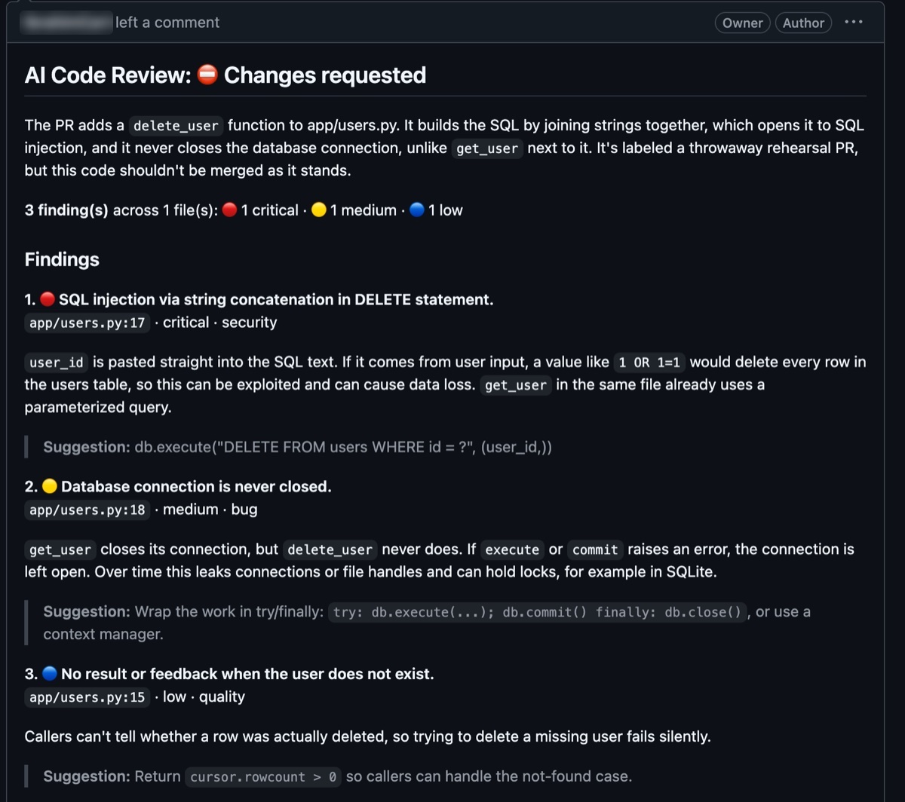
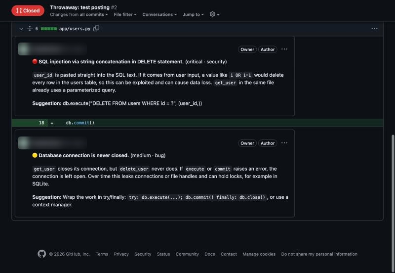
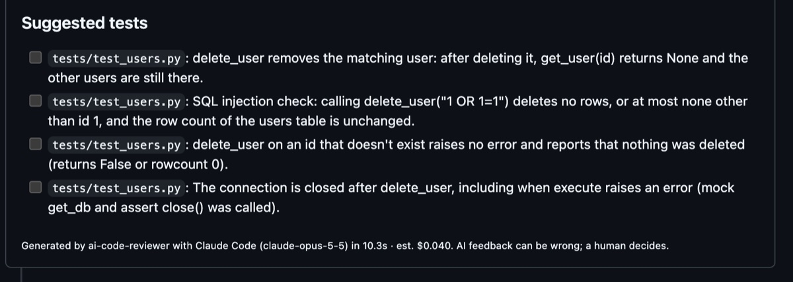
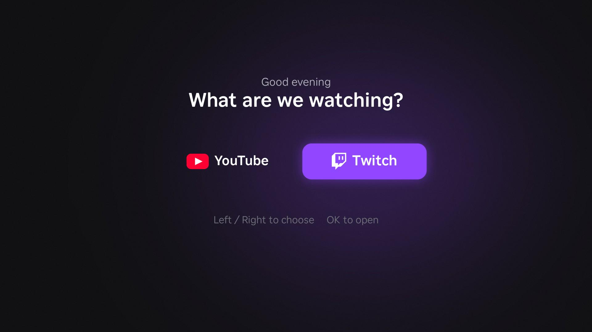
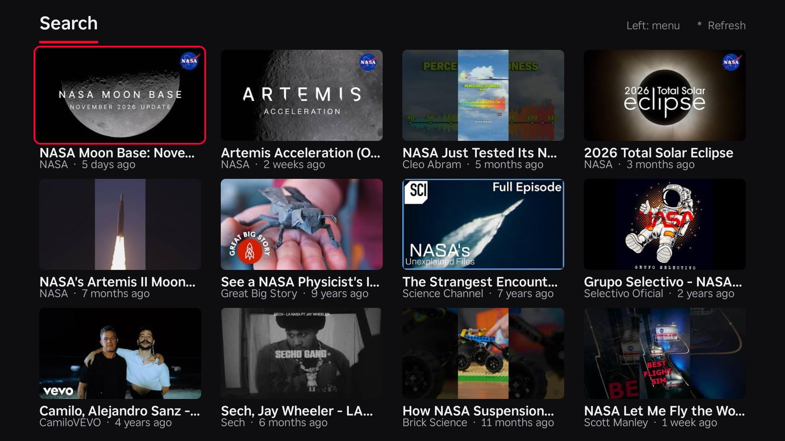
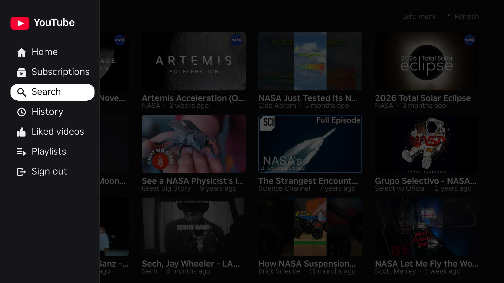
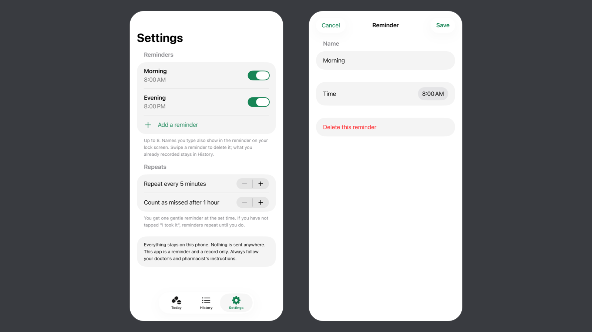
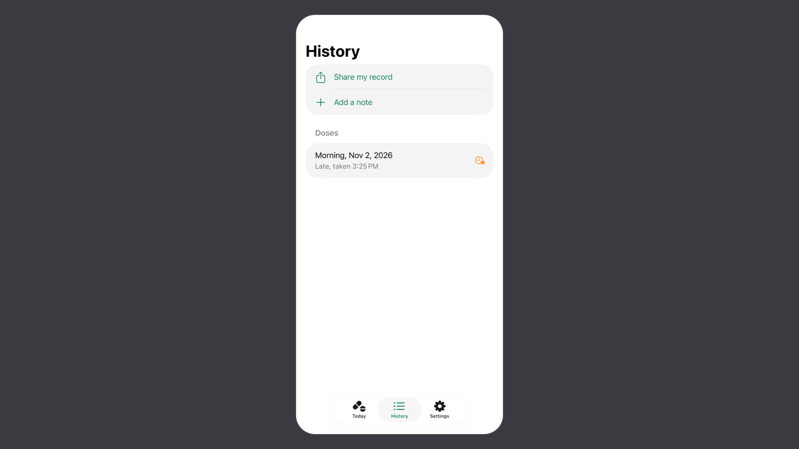

Everything I've built, newest and strongest first. My code is on GitHub.
Developer tool · AI
AI GitHub Code Reviewer
Autumn 2026 · Solo
A command-line tool that reviews a GitHub pull request or git diff with Claude Code running headless, reports bugs, security problems and missing tests, and posts them as inline comments on the PR. My own code checks every finding against the diff and drops any that cite a file or line that was never shown.
Real output from a run on November 12, 2026: one command reviewed the pull request in 14 seconds and found 7 problems.

Real screenshot: the review the tool posted on a practice pull request, with three findings ranked by severity.

Real screenshot: each finding is also posted as an inline comment on the exact line.

Real screenshot: it suggests test cases for the change. The whole review took 10.3 seconds.
What I learned: keeping the model's job small, one call with no tools, made it easy to tell whether a bad review was the model's fault or my code's. Structured output was not enough on its own: the model can return valid JSON that points at a line that does not exist, so the checks mattered as much as the prompt.
Roku TV app · Used daily at home
ThreePeat Media Player
Autumn 2026 · Solo
A Roku app I built to watch YouTube and Twitch in one place on my TV, signed in to my own accounts, with Twitch chat beside the stream. It signs in like the official TV apps (a code on the TV, approved on a phone) and uses the YouTube Data and Twitch Helix APIs. A Python helper on my Mac finds streams with yt-dlp, caches lookups, merges duplicate requests and preloads the highlighted video so it starts sooner. My mom and I use it at home; playback relies on unofficial methods, so it is for personal use only.
Real screenshot from the TV: the start screen, with YouTube selected.

Real screenshot: moving to Twitch changes the screen's color to match.

Real screenshot: YouTube search results in a 4-by-3 grid, with channel names and upload dates.

Real screenshot: the sidebar for moving between YouTube pages.
Challenges and how I solved them: YouTube's official API doesn't hand out video streams, and its stream links only work from the network that asked for them. I solved that with a small Python helper on the same home network that finds each stream with yt-dlp and passes it to the Roku. Fast scrolling could have started a lookup for every tile, so the helper caches results, lets duplicate requests share one lookup and runs at most two preloads at a time. And when the browser login it reads goes stale, it renews it and retries instead of showing an empty feed.
iPhone app · Built for a real user
Doses: medication reminders
Autumn 2026 · Solo
An iPhone app I built for my mom, who takes medication twice a day. I interviewed her first, then built it around her answers: one reminder that gets firmer if she misses a dose, a clear sign of whether she already took it, and a history she can show her doctor. Nothing leaves the phone, and the logic is covered by 20 unit tests.
Real screenshots: Today, with the green button, and the confetti that falls when a dose is recorded.

Real screenshots: Settings lists the reminders, and the editor lets you rename, retime or delete one.

Real screenshot: History lists each dose and flags the late ones.
What I learned: when I watched my mom use it, she tapped "I took it" by accident and could not see how to take it back, because the small red Undo text did not look like a button. I made it a full-width "Undo" button. Something that looks obvious to me is not obvious to others, so next time I would test with her from the start. She told me it helped her keep track of her doses and that the reminders came at the right times.
Team project
Autonomous Drone Security Monitoring System
Agile team project
A Java application that simulates autonomous drones, tracks their telemetry (location, altitude, speed, heading, battery) and flags anomalies such as sudden GPS jumps, unsafe movement and low battery, with a monitoring dashboard. I worked on the MVC architecture, telemetry generation, anomaly detection, SQLite integration, the dashboard and JUnit tests.
A bot that plays music in Discord voice channels through slash commands (/play, /skip, /pause, /resume, /queue, /stop). It searches YouTube with a SoundCloud fallback, turns Spotify tracks and playlists into playable queues, and prefetches the next song for faster starts. Runs on macOS and Windows.
This site, and my course portfolio: an interactive video-game world where every project is an island, with a WebGL globe, all generated from one data file. Both are plain HTML, CSS and JavaScript on GitHub Pages, with no framework, and I documented how I used AI to build them in a public prompt log.
A Java application that stores student records in files and finds them by ID or name using Java collections. Input validation and exception handling keep it from crashing on invalid entries, missing files or badly formatted data, and the code is split into separate classes for student information, file operations and user interaction.
Java
File I/O
Exception handling
OOP
Java application
Task Management Console Application
April 2021
A menu-driven Java command-line app for creating, viewing, updating and deleting tasks, built with encapsulated, modular classes. I debugged issues with user input, task updates and list management to make it reliable.